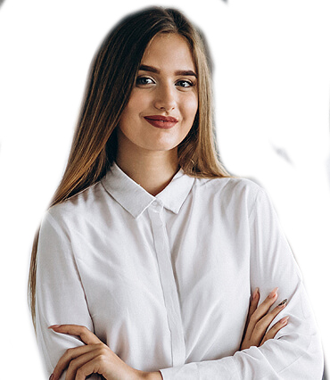
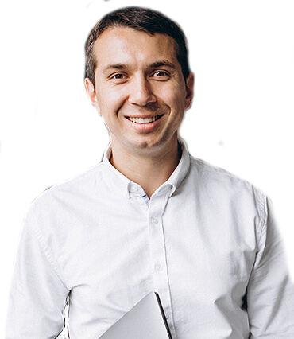

Meet Our Team
 We’re a mission-driven team of creative builders, problem-solvers, and activators. Together, we’re reimagining farming from the ground up to eradicate trade-offs between quality and quantity, sustainability and scale, and healthy and delicious when it comes to the food we eat.
We’re a mission-driven team of creative builders, problem-solvers, and activators. Together, we’re reimagining farming from the ground up to eradicate trade-offs between quality and quantity, sustainability and scale, and healthy and delicious when it comes to the food we eat.
Fares Aczam
Farm Associate
His favorite AquaVerti green is Parsley Curly because it adds sweet taste and a nice quick
essential to every salad and many meals he enjoys cooking.
Young and motivated farmer
Amazing Team player
Fastest harvester
Refers to himself as a pretty nice guy

Sarah Flack
Farm Associate
Professional Dancer
Passionate modern farmer
Environment caretaker
Vegan and loves to volunteer at farm sanctuaries during her free time
Her favorite AquaVerti product is all of them combined together

George Jbeil
Operation Manager
His favorite AquaVerti green is Dill because it represents a unique taste and elegant tall
leaves. He is now addicted to it.
Eats most of the harvest while doing quality tests
Strong believer in Vertical Sustainable Farming
He has been a Farmer since a young age working alongside his grandfather during
summers
Georges Aczam
CEO-Cofounder
His favorite AquaVerti green is the Baby Romaine Lettuces because it reminds him of the
importance of diversity, Boldness, and integrity.
Left the Finance world to have a positive impact on the planet
Loves working with motivate individual
Strong believer in buying local products and increasing food security
Our Partners